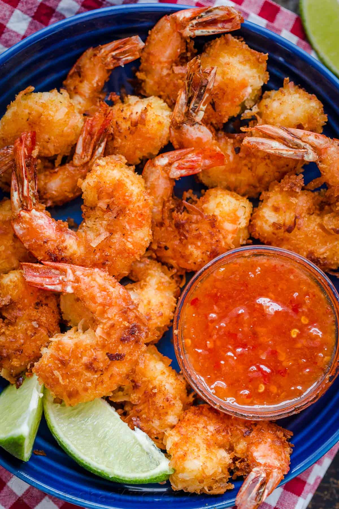
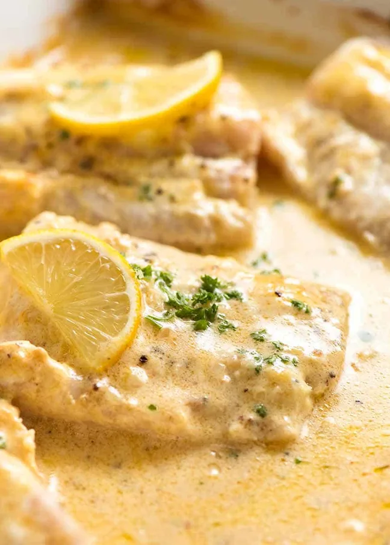
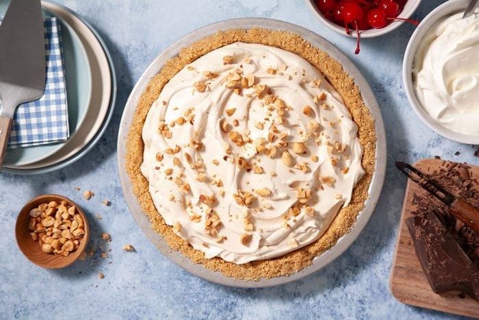

The Ultimate Cookbook
Coconut Shrimp (with sauce)
Author: Natasha Kravchuk
Servings: 6
Total Time: 30 minutes

Ingredients:
For shrimp-
-
1 lb large shrimp, 21-25 count, peeled and deveined with tails
left on
- 1/4 cup all-purpose flour
- 1/2 tsp garlic powder
- 1/2 tsp salt
- 2 large eggs, beaten with fork
- 1 1/2 cups sweetened shreeded coconut
- 1/2 cup panko bread crumbs
- light olive oil, vegetable oil, or coconut oil
- 1 lime, cut into wedges to serve
For sauce-
- 1/4 cup sweet chili sauce
- 1/4 cup apricot preserves or apricot fruit spread
Directions:
- Rinse shrimp in cold water and pat dry with paper towels.
-
Set up 3 shallow bowls. In the first, stir together 1/4 cup
flour, 1/2 tsp garlic powder and 1/2 tsp salt. In the second,
beat 2 eggs with a fork. In the third, combine 1 1/2 cups
coconut flakes and 1/2 cup panko bread crumbs.
-
Dredge shrimp in flour, then dip in beaten egg and finally dip
in crumb mixture using your hands to press the coconut crumb
mixture onto your shrimp. Transfer to a platter and repeat with
remaining shrimp. Once all shrimp are breaded, either sauté
right away or refrigerate for later.
-
To sautee: place a large pan over medium heat and add enough
oil to generously cover the bottom (1/4" deep). Once oil is hot
(350˚F), add shrimp and sauté 2 minutes per side until golden
brown and shrimp is pink and cooked through. Cook in batches
and don't overcrowd the pan. Use tongs to transfer to a paper
towel-lined plate.
-
Stir together 1/4 cup sweet chili sauce with 1/4 cup apricot
preserves. Serve shrimp with dipping sauce and squeeze fresh
lime juice over finished shrimp before serving if desired.
Baked Fish with Lemon Cream Sauce
Author: RecipeTin Eats
Servings: 4
Total Time: 15 minutes

Ingredients:
- 4 150g (5 oz) fish fillets
- 50g (4 tbsp) unsalted butter
- 1/4 cup heavy cream
- 2 garlic cloves, minced
- 1 tbsp Dijon mustard
- 1 1/2 tbsp lemon juice
- 1 tsp salt and pepper
- 1 1/2 tbsp French onion, finely chopped
- Fresh parrsley and lemon slices, to serve
Directions:
- Preheat oven to 200°C / 390°F (all oven types).
-
Place fish in a baking dish - ensure the fish isn't crammed in
too snugly. Sprinkle both sides of fish with salt and pepper.
-
Place butter, cream, garlic, mustard, lemon juice, salt and
pepper in a microwave proof jug or bowl. Microwave in 2
30 sec bursts, stirring in between, until melted and smooth.
- Sprinkle fish with shallots, then pour over sauce.
-
Bake for 10 - 12 minutes, or until fish is just cooked. Remove
from oven and transfer fish to serving plates. Spoon over sauce,
and garnish with parsley and lemon wedges if using.
Peanut Butter Cream Pie
Author: Taste of Home
Servings: 8
Total Time: 10 minutes

Ingredients:
- 1 package (8 ounces) cream cheese, softened
- 3/4 cup confectioners' sugar
- 1/2 cup peanut butter
- 6 tablespoons whole milk
- 1 carton (8 ounces) frozen whipped topping, thawed
- 1 graham cracker crust (9 inches)
- 1/4 cup chopped peanuts
Directions:
-
In a large bowl, beat cream cheese until fluffy. Beat in sugar
and peanut butter. Gradually add milk. Fold in whipped topping;
spoon into crust.
-
Cover and refrigerate overnight. Sprinkle with peanuts before
serving.